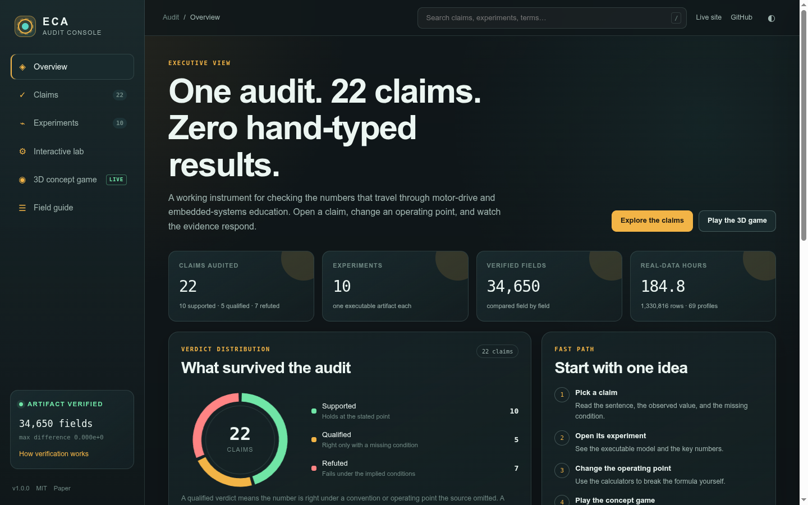

The paper
A 22-claim registry, ten studies, a five-pattern failure analysis, threats to validity, and a beginner guide that assumes no motor-drive background. Generated from the same artifact as the code.
Read Conventions, Not ConstantsReproducible engineering education audit
A statement like “Kt = 9.55/Kv” is memorizable and often wrong. This project audits 22 quantitative claims from motor-drive and embedded-systems education with ten executable experiments — then makes every verdict inspectable in a live console.

What is inside
Start with the teaching narrative, test a claim, change an operating point, or play the mission that rebuilds the audit. The same JSON evidence powers all four.
A 22-claim registry, ten studies, a five-pattern failure analysis, threats to validity, and a beginner guide that assumes no motor-drive background. Generated from the same artifact as the code.
Read Conventions, Not ConstantsClaims, experiments, six live calculators, a quiz, a field guide, and a 3D concept game. Search, filter, open a drawer, and follow any number back to its JSON path.
Launch the consolemake verify re-runs all ten experiments and compares 34,650 fields. Floats use a relative tolerance of 1e-6; strings are exact. A mismatch exits non-zero.
E10 uses the Paderborn LEA PMSM temperature dataset: 1,330,816 rows, 69 profiles, 184.8 hours, CC BY-SA 4.0. The audit shows why a real torque channel can still fail to be independent evidence.
Inspect results.jsonThe verdict split
The interesting result is where the failures concentrate: normalization, convention, hidden loading, model-derived data, and arithmetic artifacts.
| Pattern | What changes | Representative claim | Verdict |
|---|---|---|---|
| Normalization | 13.397% of peak becomes 14.030% of mean. | C01 · six-step torque ripple | supported |
| Convention | Kt is 0.03537 or 0.03063 N·m/A depending on the transform. | C10 · Kt = 9.5493/Kv is universal | qualified |
| Hidden load | A 680 Ω failsafe bias passes at 211 mV unloaded and fails at 183 mV with 32 unit loads. | C14 · RS-485 failsafe bias | refuted |
| Regime change | IPC-2221 is 2.114× narrower than IPC-2152 at 10 A, but nearly agrees at 1 A. | C16 · IPC-2221 is conservative | refuted |
| Provenance | The Paderborn torque channel is derived from commanded currents, so its temperature slope cannot calibrate Kt independently. | C20 · independent torque measurement | refuted |
Where to start
Use the executive summary and the five failure patterns to see why a conditional number is a product risk, not a trivia error.
Executive summaryFollow the artifact model, the verification contract, and the threats-to-validity section. Every number resolves by path.
MethodologyStart with the beginner guide, then take the ten-question quiz and try a lab. No prior motor-drive background required.
Beginner guideProof, not promises
Clone the repository, run the pipeline, and compare the artifact. The site you are reading is generated from the same commit.
pip install -e ".[dev]"make allmake verify
Python 3.11+. The 300 MB E10 CSV is optional; the other nine experiments run without it.
docker compose run --rm audit
The full experiment pipeline, figure render, paper render, and verification run inside the image. No host Python required.
Next
The console is the argument: a claim is a tuple of formula, convention, operating point, and hidden load. The tuple is what you can test.